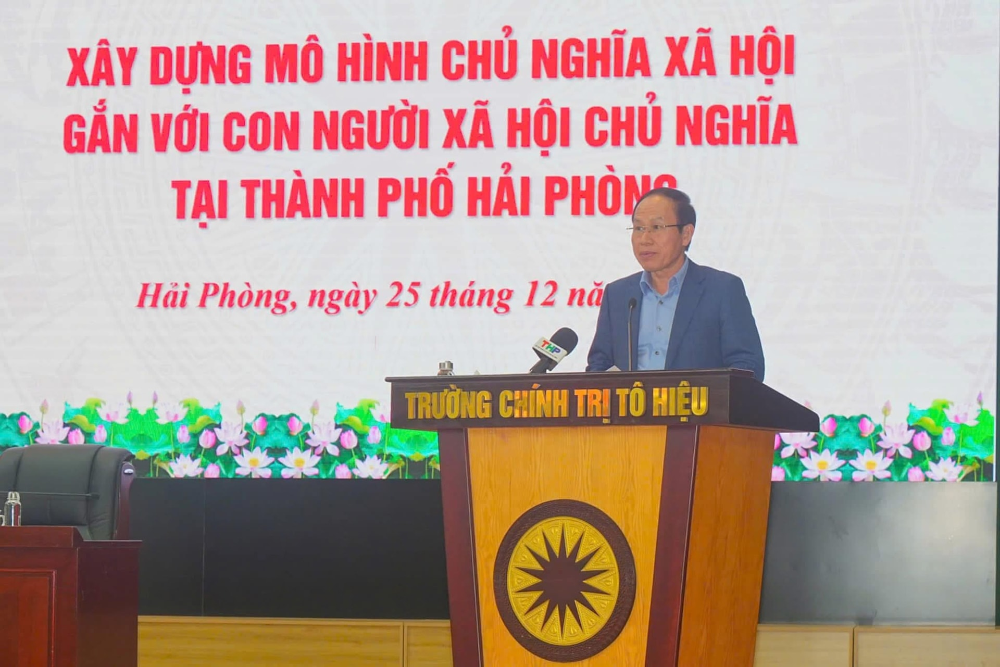

Xây dựng và triển khai thực hiện một số mô hình Chủ nghĩa xã hội gắn với con người Xã hội chủ nghĩa tại thành phố Hải Phòng
Ngày 14/01/2026 Ban chấp hành Đảng bộ thành phố Hải Phòng ban hành nghị quyết số 05-NQ/TU về xây dựng và
triển khai thực hiện một số mô hình Chủ nghĩa xã hội gắn với con người Xã hội chủ nghĩa tại thành phố Hải Phòng giai đoạn 2026 - 2030 và những năm tiếp theo.
✍️ Vũ Thành Công
📅 09-02-2026
📂 Tin tức · Chính trị
👁️ Lượt xem
0

0
Ngày 14/01/2026 Ban chấp hành Đảng bộ thành phố Hải Phòng ban hành nghị quyết số 05-NQ/TU về xây dựng và
triển khai thực hiện một số mô hình Chủ nghĩa xã hội gắn với con người Xã hội chủ nghĩa tại thành phố Hải Phòng giai đoạn 2026 - 2030 và
những năm tiếp theo.
Sau đây là những nội dung chính của nghị quyết:
I. TÌNH HÌNH VÀ NGUYÊN NHÂN
Xây dựng Chủ nghĩa xã hội (CNXH) gắn với con người Xã hội chủ nghĩa (XHCN) tại thành phố Hải Phòng (bao gồm tỉnh Hải Dương và thành phố Hải Phòng cũ) đã đạt nhiều kết quả quan trọng: Công tác xây dựng Đảng đạt kết quả toàn diện; năng lực lãnh đạo, sức chiến đấu của Đảng bộ không ngừng được nâng cao; niềm tin của Nhân dân đối với Đảng được củng cố vững chắc. Đảng bộ thành phố kiên định đường lối đổi mới, chủ động, tiên phong đề xuất và thực hiện nhiều cơ chế, chính sách đặc thù, tạo động lực thúc đẩy phát triển nhanh và bền vững. Dân chủ xã hội chủ nghĩa được mở rộng theo hướng thực chất, bảo đảm phương châm “dân biết, dân bàn, dân làm, dân kiểm tra, dân giám sát, dân thụ hưởng”, qua đó phát huy rõ nét vai trò chủ thể của Nhân dân. Kinh tế tăng trưởng nhanh, bền vững, liên tục nằm trong nhóm các địa phương dẫn đầu cả nước; quy mô lớn thứ 3 cả nước, cơ cấu kinh tế chuyển dịch đúng hướng, khẳng định vai trò động lực phát triển của vùng và cả nước. Kết cấu hạ tầng đô thị và nông thôn được đầu tư đồng bộ, diện mạo thành phố ngày càng văn minh, hiện đại. Thành phố đi đầu trong chuyển đổi số, ứng dụng khoa học - công nghệ và thu hút đầu tư, nhất là các ngành công nghệ cao, thân thiện với môi trường. Văn hóa - xã hội được quan tâm phát triển; giáo dục, y tế, an sinh xã hội đạt nhiều kết quả nổi bật; chất lượng nguồn nhân lực từng bước được nâng lên. Những kết quả đó tạo nền tảng quan trọng, vững chắc để Hải Phòng tiếp tục triển khai, hiện thực hóa mô hình Chủ nghĩa xã hội gắn với xây dựng con người Xã hội chủ nghĩa trong giai đoạn tới.
Tuy nhiên, quá trình xây dựng CNXH gắn với con người XHCN ở Hải Phòng còn một số hạn chế, bất cập: Năng lực lãnh đạo, chỉ đạo và quản lý của một số cấp ủy, tổ chức Đảng chưa theo kịp yêu cầu thực tiễn; phương thức lãnh đạo chậm đổi mới; vẫn còn cán bộ, đảng viên vi phạm kỷ luật, chưa thực sự nêu gương. Cơ cấu kinh tế chuyển dịch chưa đạt mục tiêu đề ra, tỷ trọng khu vực dịch vụ có xu hướng giảm; chưa hình thành được khu công nghiệp công nghệ cao; công nghiệp hỗ trợ, khu vực kinh tế trong nước, phát triển còn chậm. Kết cấu hạ tầng đô thị còn những điểm nghẽn; liên kết đô thị - nông thôn chưa chặt chẽ; vai trò động lực, dẫn dắt của hệ thống đô thị đối với phát triển kinh tế - xã hội chưa được phát huy đầy đủ. Chất lượng nguồn nhân lực chưa đáp ứng yêu cầu công nghiệp hóa, hiện đại hóa; cơ sở vật chất giáo dục, y tế còn hạn chế. Tình hình quốc phòng - an ninh vẫn tiềm ẩn yếu tố phức tạp; công tác đối ngoại chưa phát huy hết vai trò. Ý thức chấp hành pháp luật và tinh thần trách nhiệm xã hội của một bộ phận Nhân dân còn hạn chế.
Nguyên nhân của hạn chế, về chủ quan: Năng lực lãnh đạo, tầm nhìn, tinh thần trách nhiệm của một số lãnh đạo cấp ủy, cơ quan, địa phương chưa đáp ứng yêu cầu và sự thay đổi nhanh chóng tình hình thực tế. Hiệu lực quản lý nhà nước ở một số ngành, lĩnh vực còn hạn chế; cơ chế phối hợp giữa các ban, sở, ngành, địa phương nhất là xử lý những việc mới, việc khó có lúc còn bị động, thiếu chặt chẽ. Một bộ phận cán bộ, đảng viên giảm sút ý chí phấn đấu, thiếu ý thức tổ chức kỷ luật, vi phạm kỷ luật đảng và pháp luật đã bị xử lý, làm giảm niềm tin trong Nhân dân. Về khách quan: Tình hình quốc tế và khu vực có nhiều biến động phức tạp, khó lường; biến đổi khí hậu, dịch bệnh, sức ép cạnh tranh toàn cầu ngày càng gia tăng. Hệ thống văn bản quy phạm pháp luật chưa đầy đủ và thiếu đồng bộ. Mô hình tổng thể tổ chức trong hệ thống chính trị còn chưa hoàn thiện. Việc phân cấp, phân quyền chưa thật sự mạnh mẽ; cơ chế đôn đốc, kiểm tra, giám sát và kiểm soát chưa thật sự hiệu quả. Sự chống phá của các thế lực thù địch ngày càng tinh vi, xảo quyệt với nhiều phương thức mới, khó lường.
II. QUAN ĐIỂM, MỤC TIÊU
1. Quan điểm
Một là, kiên định và vận dụng sáng tạo chủ nghĩa Mác-Lênin, tư tưởng Hồ Chí Minh về CNXH và con đường đi lên CNXH; về con người XHCN và việc xây dựng con người XHCN; những thành tựu và bài học kinh nghiệm qua 40 năm thực hiện công cuộc đổi mới. Kiên định mục tiêu độc lập dân tộc gắn liền với CNXH.
Hai là, tăng cường năng lực lãnh đạo, sức chiến đấu của các cấp uỷ, tổ chức đảng; hiệu lực, hiệu quả quản lý của các cấp chính quyền; phát huy sức mạnh của cả hệ thống chính trị và toàn xã hội, truyền thống cách mạng của thành phố trong xây dựng CNXH gắn với con người XHCN.
Ba là, xây dựng CNXH gắn với con người XHCN là nhiệm vụ chính trị quan trọng nhằm hiện thực hóa sự quan tâm, lãnh đạo, chỉ đạo của Trung ương đối với thành phố, đồng thời là cơ hội để Hải Phòng cất cánh trong kỷ nguyên mới.
Bốn là, xây dựng CNXH gắn với con người XHCN trên cơ sở khai thác hiệu quả các lợi thế, tiềm năng về vị trí địa lý, lịch sử, văn hóa, con người Hải Phòng, trong mối tương quan, liên kết với các tỉnh, thành phía Bắc và cả nước; tránh khuynh hướng bảo thủ, giáo điều hoặc tầm thường hóa CNXH, đặc biệt là sự nôn nóng trong triển khai thực hiện.
Năm là, các chủ trương, chính sách, dự án phát triển kinh tế - xã hội của thành phố phải gắn liền với mục tiêu bảo đảm an sinh xã hội, thực hiện tiến bộ và công bằng xã hội, phát triển văn hoá, bảo vệ môi trường, sinh thái; bảo đảm quốc phòng, an ninh trật tự, an toàn xã hội; không ngừng nâng cao đời sống vật chất, tinh thần và phát huy đầy đủ vai trò làm chủ của Nhân dân.
2. Mục tiêu
2.1. Mục tiêu chung: Xây dựng Hải Phòng trở thành thành phố “VĂN MINH - HẠNH PHÚC” - hình mẫu tiêu biểu của mô hình Chủ nghĩa xã hội trong kỷ nguyên mới - kỷ nguyên vươn mình, giàu mạnh và thịnh vượng của dân tộc, nơi hội tụ đầy đủ các yếu tố: kinh tế phát triển cao và bền vững; xã hội dân chủ, công bằng, văn minh; con người được phát triển toàn diện về trí tuệ, đạo đức, thể chất, tinh thần; cộng đồng đoàn kết, nhân văn, có bản sắc văn hóa riêng; chính quyền hiện đại, hoạt động minh bạch, hiệu quả, vì Nhân dân phục vụ.
2.2. Mục tiêu cụ thể:
(1). Về thể chế - chính quyền: Đổi mới phương thức lãnh đạo, nâng cao năng lực quản trị của hệ thống chính trị, hướng đến chính quyền hiện đại - kiến tạo - phục vụ - minh bạch; thực hiện dân chủ thực chất, người dân là trung tâm, chủ thể và mục tiêu của phát triển.
(2). Về kinh tế: Phát triển kinh tế hiện đại, xanh - tuần hoàn - số, gắn tăng trưởng kinh tế với công bằng xã hội, đảm bảo an sinh xã hội bền vững, không ai bị bỏ lại phía sau.
(3). Về môi trường sống - xã hội đáng sống: Xây dựng môi trường đô thị, nông thôn sáng, xanh, sạch, an toàn, nhân văn, phát triển hệ thống phúc lợi công bằng tiếp cận dịch vụ công, cơ hội phát triển cho mọi người.
(4). Về quốc phòng - an ninh và đối ngoại: Bảo đảm quốc phòng, giữ vững ổn định chính trị, trật tự an toàn xã hội; chủ động hội nhập quốc tế sâu rộng, hiệu quả; nâng cao vị thế và hình ảnh của thành phố trên trường quốc tế.
(5). Về con người Xã hội chủ nghĩa: Xây dựng thế hệ công dân Hải Phòng có tri thức - đạo đức - ý thức công dân - tinh thần cống hiến; phát triển hệ thống giáo dục, y tế, văn hóa làm nền tảng nâng cao tầm vóc con người về mọi mặt.
III. NHIỆM VỤ VÀ GIẢI PHÁP TRỌNG TÂM
1. Xây dựng chương trình, kế hoạch hành động triển khai thực hiện Đề án, Nghị quyết; tổ chức nghiên cứu, học tập, quán triệt, tuyên truyền và triển khai thực hiện
Cụ thể hóa các mục tiêu, chỉ tiêu, nhiệm vụ và giải pháp của Đề án, Nghị quyết thành Chương trình, kế hoạch hành động gắn với triển khai Nghị quyết đại hội đảng các cấp và Nghị quyết Đại hội Đảng bộ thành phố lần thứ I; xác định rõ nhiệm vụ trọng tâm theo từng năm, cơ quan chủ trì, sản phẩm đầu ra.
Tổ chức hội nghị học tập, quán triệt Đề án, Nghị quyết đến toàn hệ thống chính trị; biên soạn tài liệu hỏi - đáp, cung cấp thông tin tuyên truyền thống nhất. Đưa nội dung Đề án vào sinh hoạt chi bộ, chương trình đào tạo, bồi dưỡng lý luận chính trị, tạo sự thống nhất nhận thức và hành động trong toàn Đảng bộ.
Xây dựng kế hoạch truyền thông tổng thể; mở chuyên trang, chuyên mục trên Báo và Phát thanh, truyền hình thành phố, các cơ quan báo chí, mạng xã hội chính thống. Tuyên truyền gương tập thể, cá nhân tiêu biểu, mô hình hay, cách làm sáng tạo; chủ động đấu tranh phản bác các quan điểm sai trái, thù địch liên quan đến chủ nghĩa xã hội và con đường đi lên chủ nghĩa xã hội tại Việt Nam và quá trình triển khai xây dựng mô hình tại thành phố.
2. Triển khai một số mô hình trọng tâm
Căn cứ thực trạng xây dựng Chủ nghĩa xã hội gắn với con người Xã hội chủ nghĩa tại thành phố trong thời gian qua và đặc điểm tình hình của thành phố, thời gian tới, tập trung triển khai thực hiện một số mô hình trọng tâm sau đây:
2.1. Mô hình, mục tiêu, chủ thể thực hiện
2.1.1. Mô hình “Chính quyền thân thiện”
- Mục tiêu: Đổi mới mạnh mẽ lề lối làm việc của chính quyền cơ sở và công sở từ “mệnh lệnh hành chính” sang “phục vụ, hướng dẫn, vận động, thuyết phục”, xây dựng chính quyền kiến tạo, liêm chính, hành động, vì Nhân dân phục vụ, củng cố mối quan hệ mật thiết, gắn bó giữa chính quyền với Nhân dân. Đến hết năm 2027, 100% chính quyền cấp xã đạt chuẩn “Chính quyền thân thiện”; 100% ban, sở, ngành thành phố đạt chuẩn “Công sở thân thiện”.
- Chủ thể thực hiện: Đảng ủy Ủy ban nhân dân thành phố chỉ đạo Sở Nội vụ chủ trì tham mưu triển khai thực hiện.
2.1.2. Mô hình “Thành phố thượng tôn và tuân thủ pháp luật”
- Mục tiêu: Xây dựng và vận hành thành phố Hải Phòng có pháp luật giữ vị trí tối thượng trong quản lý nhà nước và xã hội, mọi chủ thể từ các cơ quan nhà nước đến cán bộ, công chức, viên chức và người dân đều nhận thức đúng, tuân thủ nghiêm và thực thi đầy đủ pháp luật, qua đó đảm bảo nhà nước pháp quyền, kỷ luật, cương hành chính, quyền con người và quyền công dân được đảm bảo, góp phần phục vụ phát triển bền vững thành phố.
- Chủ thể thực hiện: Đảng ủy Ủy ban nhân dân thành phố chỉ đạo Sở Tư pháp chủ trì tham mưu triển khai thực hiện.
2.1.3. Mô hình “Thành phố văn minh; xã, phường hạnh phúc”
- Mục tiêu: Đến năm 2030 Hải Phòng trở thành một trong 100 - 120 thành phố đáng sống nhất thế giới và phấn đấu top 50 trong xếp hạng vào năm 2045, thuộc nhóm Alpha trong xếp hạng các thành phố toàn cầu.
- Chủ thể thực hiện: Đảng ủy Mặt trận Tổ quốc Việt Nam thành phố chỉ đạo Ủy ban Mặt trận Tổ quốc Việt Nam thành phố tham mưu triển khai thực hiện.
2.1.4. Mô hình “Thành phố đổi mới sáng tạo”
- Mục tiêu: Tạo lập môi trường, điều kiện để Hải Phòng trở thành thành phố đổi mới sáng tạo, trong đó hoạt động nghiên cứu và ứng dụng khoa học và công nghệ, hoạt động đổi mới sáng tạo và khởi nghiệp sáng tạo được khuyến khích, hỗ trợ phát triển mạnh mẽ và sâu rộng, trở thành động lực chính để phát triển nhanh và bền vững kinh tế - xã hội, tạo nền tảng vững chắc để đưa Hải Phòng trở thành thành phố công nghiệp hiện đại, thông minh, bền vững tầm cỡ khu vực Đông Nam Á.
- Chủ thể thực hiện: Đảng ủy Ủy ban nhân dân thành phố chỉ đạo Sở Khoa học và Công nghệ chủ trì tham mưu triển khai thực hiện.
2.1.5. Mô hình “Cụm công nghiệp sinh thái”
- Mục tiêu: Đến năm 2030, phấn đấu xây dựng và hình thành từ 1 đến 2 cụm công nghiệp sinh thái, đồng thời hỗ trợ thúc đẩy hình thành các cụm liên kết ngành công nghiệp. Giai đoạn 2031- 2045, khuyến khích, hỗ trợ các chủ đầu tư tiếp tục tham gia xây dựng từ 2 đến 3 cụm công nghiệp sinh thái và thúc đẩy các chuỗi liên kết giữa các cụm công nghiệp, các doanh nghiệp thứ cấp trong và ngoài cụm. Từ năm 2045 trở đi, tiếp tục khuyến khích, hỗ trợ xây dựng các cụm công nghiệp sinh thái theo quy hoạch được phê duyệt và thúc đẩy các chuỗi liên kết.
- Chủ thể thực hiện: Đảng ủy Ủy ban nhân dân thành phố chỉ đạo Sở Công Thương chủ trì tham mưu triển khai thực hiện.
2.1.6. Mô hình “Nhà ở xã hội chủ nghĩa tại Hải Phòng: Công bằng, nhân văn, đoàn kết”
- Mục tiêu: Giai đoạn 2026 - 2030: Hoàn thành đầu tư xây dựng và đảm bảo đủ điều kiện đưa ra thị trường ít nhất 32.845 căn nhà ở xã hội, đảm bảo đạt tổng số tối thiểu 49.400 căn (phấn đấu cao hơn) vào cuối năm 2030. Nhân rộng áp dụng tiêu chuẩn thiết kế xanh, công nghệ thi công tiên tiến (lắp ghép) vào các dự án nhà ở xã hội mới. Đảm bảo tỷ lệ nhà ở xã hội cho thuê/thuê mua hợp lý và 100% dự án mới có đầy đủ hạ tầng xã hội thiết yếu. Hoàn thiện, vận hành hiệu quả Hệ thống quản lý nhà ở xã hội; đơn giản hóa tối đa thủ tục xét duyệt và nâng cao khả năng tiếp cận của người dân.
- Chủ thể thực hiện: Đảng ủy Ủy ban nhân dân thành phố chỉ đạo Sở Xây dựng chủ trì tham mưu triển khai thực hiện.
2.1.7. Mô hình “Thành phố âm nhạc”
- Mục tiêu: Xây dựng thành phố Hải Phòng trở thành một không gian đô thị sáng tạo, nhân văn và giàu bản sắc, trong đó âm nhạc giữ vai trò trục giá trị văn hóa trung tâm, góp phần phát triển toàn diện con người xã hội chủ nghĩa; bồi đắp lối sống đẹp, nhân văn, kỷ cương, củng cố nền tảng tinh thần xã hội và tăng cường khối đại đoàn kết toàn dân tạo động lực bền vững cho sự phát triển của thành phố. Đưa Hải Phòng trở thành trung tâm văn hóa - sáng tạo quy mô lớn, có sức lan tỏa vùng, quốc gia và quốc tế, hướng tới gia nhập Mạng lưới Thành phố Sáng tạo UNESCO về âm nhạc, đáp ứng yêu cầu phát triển bền vững đến năm 2045.
- Chủ thể thực hiện: Đảng ủy Ủy ban nhân dân thành phố chỉ đạo Sở Văn hóa, Thể thao và Du lịch chủ trì tham mưu triển khai thực hiện.
2.1.8. Mô hình “Cơ sở kinh doanh dịch vụ thân thiện với môi trường, không sử dụng sản phẩm nhựa dùng một lần tại các điểm du lịch”
- Mục tiêu: Đến năm 2030: 100% các điểm du lịch, cơ sở kinh doanh dịch vụ ven biển trên địa bàn thành phố không sử dụng sản phẩm nhựa dùng một lần; 50% các cơ sở kinh doanh, dịch vụ du lịch tại các địa bàn khác không sử dụng sản phẩm nhựa dùng một lần; xây dựng hình ảnh du lịch Hải Phòng thân thiện môi trường. Góp phần giảm thiểu rác thải nhựa tại các điểm du lịch như Đồ Sơn, Cát Bà, Hòn Dấu, trung tâm thành phố. Giảm tải gánh nặng xử lý rác thải nhựa tại thành phố, góp phần bảo vệ hệ sinh thái ven biển và tài nguyên thiên nhiên. Tạo ra trải nghiệm du lịch xanh, an toàn và thân thiện với môi trường cho du khách và nâng cao ý thức bảo vệ môi trường của người dân và du khách về tiêu dùng bền vững. Tạo việc làm “xanh” (nhân viên phục vụ, lái xe điện, hướng dẫn viên, nhân viên phân loại rác…) góp phần thúc đẩy kinh tế địa phương...
- Chủ thể thực hiện: Đảng ủy Ủy ban nhân dân thành phố chỉ đạo Sở Nông nghiệp và Môi trường chủ trì tham mưu triển khai thực hiện.
2.1.9. Mô hình “Thành phố chăm sóc sức khỏe toàn dân, toàn diện”
- Mục tiêu: Đẩy mạnh phát triển Bảo hiểm y tế (BHYT) toàn dân, hướng tới thực hiện bao phủ chăm sóc sức khỏe và BHYT toàn dân. Mọi người dân đều được quản lý, chăm sóc sức khỏe từ trạm y tế đến các cơ sở y tế; công tác chăm sóc sức khỏe Nhân dân theo hướng công bằng, hiệu quả, chất lượng và phát triển bền vững. Nâng cao chất lượng dân số; đảm bảo sức khỏe cho phụ nữ mang thai, trẻ sơ sinh và các cặp đôi trước khi bước vào hôn nhân; giảm thiểu tỷ lệ trẻ sinh ra mắc dị tật bẩm sinh, bệnh di truyền và dự phòng các vấn đề về sức khỏe; thực hiện tốt công tác dự phòng, khám bệnh chữa bệnh đáp ứng nhu cầu của Nhân dân. Phấn đấu, từ năm 2030 trở đi, người dân khám chữa bệnh tại trạm y tế được miễn viện phí, thanh toán bằng BHYT và nguồn kinh phí hỗ trợ của chính quyền cấp xã.
- Chủ thể thực hiện: Đảng ủy Ủy ban nhân dân thành phố chỉ đạo Sở Y tế chủ trì tham mưu triển khai thực hiện.
2.1.10. Mô hình “Trường học xã hội chủ nghĩa”
- Mục tiêu: Hình thành mô hình trường tiên tiến, hiện đại, nhân văn, công bằng và hội nhập, gắn với nâng cao chất lượng giáo dục - đào tạo một cách đồng bộ, đảm bảo mọi học sinh đều được thụ hưởng điều kiện học tập tốt nhất, được phát triển toàn diện trong không gian học tập tích cực, tôn trọng sự khác biệt và gắn kết cộng đồng. Giai đoạn 2026 - 2030, hoàn thiện mô hình mẫu tại 09 trường, đảm bảo đạt chuẩn về cơ sở vật chất, thiết bị dạy học, ứng dụng công nghệ và chất lượng giáo dục. Xây dựng cơ sở khoa học và thực tiễn, đề xuất nhân rộng mô hình trường học XHCN ra toàn thành phố trong giai đoạn 2030-2035.
- Chủ thể thực hiện: Đảng ủy Ủy ban nhân dân thành phố chỉ đạo Sở Giáo dục và Đào tạo chủ trì tham mưu triển khai thực hiện.
2.1.11. Mô hình “Chi đoàn XHCN gắn với Đoàn viên XHCN”
- Mục tiêu: Nâng cao hiệu quả công tác giáo dục lý tưởng cách mạng, đạo đức, lối sống văn hóa cho thanh niên, thiếu niên, nhi đồng, qua đó góp phần xây dựng thế hệ trẻ Hải Phòng có lý tưởng cách mạng, bản lĩnh vững vàng, giàu lòng yêu nước, yêu quê hương; có tri thức, có đạo đức, có sức khỏe tốt, có văn hóa, có tính thẩm mỹ cao; có ý thức tuân thủ pháp luật, trách nhiệm với cộng đồng; có ước mơ, hoài bão, khát vọng và kỹ năng hội nhập quốc tế. Hằng năm, 100% các chi đoàn đăng ký thi đua Chi đoàn XHCN, 100% đoàn viên đăng ký thi đua Đoàn viên XHCN. Phấn đấu đến năm 2030, 80% các chi đoàn đạt danh hiệu Chi đoàn XHCN, 80% đoàn viên đạt danh hiệu Đoàn viên XHCN.
- Chủ thể thực hiện: Đảng ủy Mặt trận Tổ quốc Việt Nam thành phố chỉ đạo Ban Thường vụ Thành đoàn chủ trì tham mưu triển khai thực hiện.
2.2. Nhiệm vụ, giải pháp trọng tâm, nguồn lực, lộ trình thực hiện (có phụ lục kèm theo)
PHỤ LỤC 1.
BỘ TIÊU CHÍ XÂY DỰNG CHỦ NGHĨA XÃ HỘI GẮN VỚI CON NGƯỜI XÃ HỘI CHỦ NGHĨA TẠI THÀNH PHỐ HẢI PHÒNG GIAI ĐOẠN 2026 - 2030 VÀ NHỮNG NĂM TIẾP THEO
I. Mục tiêu hướng tới: Thành phố VĂN MINH, HẠNH PHÚC.
Xây dựng Hải Phòng trở thành “Thành phố Văn minh - Hạnh phúc” là một chủ trương lớn, thể hiện tầm nhìn và khát vọng phát triển của thành phố Cảng.
“Thành phố Văn minh - Hạnh phúc” là một đô thị có hạ tầng hiện đại, kinh tế bền vững, văn hóa ứng xử chuẩn mực, môi trường sống trong lành, an toàn, người dân có cơ hội phát triển toàn diện, được hưởng thụ các giá trị văn hóa, xã hội và cảm thấy hài lòng, hạnh phúc với cuộc sống của mình.
1. Thành phố Văn minh không chỉ gói gọn trong sự hiện đại về hạ tầng mà còn bao hàm các khía cạnh về ý thức, nếp sống và văn hóa ứng xử của người dân. Cụ thể:
(i) Hạ tầng đồng bộ, hiện đại: Có hệ thống hạ tầng giao thông, đô thị, công nghệ thông tin phát triển, tiện nghi và thân thiện với môi trường, bao gồm các công trình công cộng đạt chuẩn, không gian sáng, xanh được quy hoạch hợp lý, hệ thống quản lý đô thị thông minh. Hạ tầng đổi mới sáng tạo, hệ sinh thái số đồng bộ, bao gồm trung tâm đổi mới sáng tạo vùng duyên hải, trung tâm dữ liệu lớn (Big Data), nền tảng điện toán đám mây phục vụ điều hành chính quyền số, kinh tế số, xã hội số.
(ii) Môi trường sống trong lành: Đảm bảo chất lượng không khí, nguồn nước, xử lý rác thải hiệu quả, giảm thiểu ô nhiễm là yếu tố cốt lõi của một thành phố văn minh, nơi người dân được sống trong không gian sạch đẹp.
(iii) Văn hóa ứng xử chuẩn mực: Người dân có ý thức tuân thủ pháp luật, quy định chung; thái độ lịch sự, tôn trọng trong giao tiếp, ứng xử; tinh thần cộng đồng, sẵn sàng giúp đỡ lẫn nhau.
(iv) Phát triển kinh tế bền vững: Kinh tế phát triển song hành với bảo vệ môi trường, đảm bảo an sinh xã hội, tạo việc làm ổn định và thu nhập tốt cho người dân. Đảm bảo tốc độ tăng trưởng kinh tế cao trên nền tảng khoa học công nghệ, dữ liệu lớn, trí tuệ nhân tạo và chuyển đổi số toàn diện các lĩnh vực kinh tế.
(v) Giáo dục và Y tế tiên tiến: Hệ thống giáo dục chất lượng cao, tiếp cận được với mọi tầng lớp dân cư; dịch vụ y tế hiện đại, chăm sóc sức khỏe toàn diện cho người dân.
(vi) An ninh, trật tự được đảm bảo: Môi trường sống an toàn, ít tệ nạn xã hội, người dân yên tâm lao động, học tập và sinh hoạt.
2. Thành phố Hạnh phúc là mục tiêu cuối cùng của mọi nỗ lực phát triển. Mức độ Hạnh phúc của thành phố Hải Phòng được đo lường bằng sự hài lòng, an lạc và chất lượng cuộc sống của từng cá nhân. Các yếu tố cấu thành bao gồm:
(i) Sự hài lòng về cuộc sống: Người dân cảm thấy hài lòng với công việc, thu nhập, nhà ở, môi trường sống và các dịch vụ công cộng được cung cấp.
(ii) Sức khỏe thể chất và tinh thần: Người dân được tiếp cận và dễ dàng tiếp cận các dịch vụ chăm sóc sức khỏe tốt, có điều kiện rèn luyện thể chất, và có đời sống tinh thần phong phú (văn hóa, nghệ thuật, giải trí).
(iii) Mối quan hệ xã hội tốt đẹp: Cộng đồng gắn kết, tình làng nghĩa xóm bền chặt, không có sự phân biệt đối xử, mọi người được tôn trọng và hòa nhập.
(iv) Cơ hội phát triển cá nhân: Mọi người dân, không phân biệt giới tính, tuổi tác, địa vị xã hội, đều có cơ hội học tập, nâng cao trình độ, phát triển bản thân và đóng góp cho xã hội.
(v) Cảm giác an toàn và được bảo vệ: Người dân cảm thấy an toàn trước các rủi ro (thiên tai, dịch bệnh, tội phạm) và được nhà nước bảo vệ quyền lợi chính đáng.
(vi) Giá trị nhân văn được đề cao: Lòng nhân ái, sự sẻ chia, tình nguyện vì cộng đồng được phát huy, tạo nên một xã hội nhân văn, giàu tình người.
II. Bộ tiêu chí Chủ nghĩa xã hội tại thành phố Hải Phòng
1. Dân giàu, thành phố vững mạnh, dân chủ, công bằng, văn minh
- Người dân có thu nhập bình quân đứng trong Top 5 cả nước, không còn hộ nghèo; diện tích nhà ở bình quân cao hơn ít nhất 1,5 lần trung bình cả nước; mỗi người dân trong độ tuổi lao động đều có việc làm.
- Thành phố có chính quyền minh bạch, hiệu quả; hạ tầng hiện đại, đồng bộ; nền kinh tế phát triển đa ngành theo định hướng xã hội chủ nghĩa; an ninh trật tự, an toàn xã hội ổn định; an sinh, phúc lợi xã hội bền vững.
- Người dân chủ động tham gia sâu vào các khâu trong đời sống xã hội, có cơ hội phát triển bình đẳng; công bằng trong tiếp cận các dịch vụ xã hội; có nếp sống văn hóa, ứng xử lịch sự, chủ động tiếp thu có chọn lọc tinh hoa văn hóa nhân loại, có ý thức giữ gìn và phát huy truyền thống văn hóa Hải Phòng.
2. Nhân dân làm chủ, đồng hành, thụ hưởng
- Thành phố có cơ chế, chính sách khuyến khích, động viên, khen thưởng người dân chủ động, tích cực tham gia vào các công việc của thành phố ngay từ khâu xác lập chủ trương đến tổ chức triển khai thực hiện.
- Người dân chủ động tham gia kiểm tra, giám sát, phản biện các cơ chế, chính sách và việc thực hiện chức trách, nhiệm vụ của các cơ quan, tổ chức, cá nhân trong hệ thống chính trị.
- Giải quyết hài hòa các quan hệ lợi ích giữa các giai tầng trong xã hội gắn với hiện chủ trương “Đầu tư cho an sinh, phúc lợi xã hội đi trước so với tốc độ phát triển kinh tế”.
3. Có nền kinh tế phát triển cao dựa trên lực lượng sản xuất hiện đại và quan hệ sản xuất tiến bộ phù hợp, thông minh, hội nhập sâu rộng
- Các chủ trương, chính sách, dự án phát triển kinh tế - xã hội phải gắn với mục tiêu bảo đảm an sinh xã hội, thực hiện tiến bộ, công bằng xã hội, phát triển văn hoá, bảo vệ môi trường; bảo đảm quốc phòng, an ninh, trật tự, an toàn xã hội.
- Các thành phần kinh tế của thành phố đi đầu trong ứng dụng khoa học, công nghệ, đổi mới sáng tạo, phát triển kinh tế số, kinh tế xanh, kinh tế tuần hoàn. Hình thành các trung tâm nghiên cứu, thử nghiệm, ứng dụng đổi mới sáng tạo về công nghệ sản xuất tiên tiến, logistics thông minh, đô thị thông minh, nông nghiệp công nghệ cao và tài chính công nghệ.
- Phát triển hệ sinh thái khởi nghiệp đổi mới sáng tạo toàn thành phố; kết nối khu vực FDI với hệ thống doanh nghiệp đổi mới sáng tạo bản địa; hình thành các cụm đổi mới sáng tạo liên vùng gắn kết với khu vực tam giác Hải Phòng – Hà Nội – Quảng Ninh.
- Nguồn nhân lực thành phố có chất lượng cao, đáp ứng yêu cầu đẩy mạnh công nghiệp hoá, hiện đại hoá, xây dựng và phát triển thành phố.
4. Có văn hoá hiện đại, nhân văn, giàu bản sắc
- Văn hóa Hải Phòng phải được đặt ngang hàng với kinh tế, chính trị, xã hội.
- Các cuộc vận động và phong trào thi đua yêu nước trên các lĩnh vực của đời sống xã hội tại thành phố gắn kết chặt chẽ với Cuộc vận động “Toàn dân đoàn kết xây dựng nông thôn mới, đô thị văn minh” và các hoạt động ngoại giao văn hóa.
- Các di sản văn hóa vật thể, phi vật thể Hải Phòng được phục dựng, bảo tồn và phát huy giá trị gắn với xây dựng môi trường văn hoá lành mạnh, văn minh, hiện đại.
5. Người dân thành phố có cuộc sống ấm no, tự do, hạnh phúc, có điều kiện phát triển toàn diện
- Phát triển kinh tế hài hòa với văn hóa, thực hiện tiến bộ và công bằng xã hội; không ngừng cải thiện, nâng cao đời sống vật chất và tinh thần của người dân.
- Các quyền cơ bản của người dân được tôn trọng và bảo vệ. Người dân thượng tôn pháp luật.
- Người dân được tiếp cận, thụ hưởng các dịch vụ xã hội chất lượng cao, đặc biệt là y tế, giáo dục, việc làm, điện, nước sạch, thông tin liên lạc... ; hệ thống an sinh xã hội bền vững, dịch vụ trợ giúp xã hội đa dạng và chuyên nghiệp.
- Người dân có năng lực số cơ bản; 100% người dân được phổ cập kỹ năng số cơ bản; mỗi người dân là một tác nhân tham gia hệ sinh thái số, kinh tế số, xã hội số.
6. Xã hội phát triển bền vững, bình đẳng, vì con người
- Có cơ chế, chính sách phát triển bền vững, với phương châm mọi người dân đều được hưởng thành quả phát triển, không ai bị bỏ lại phía sau.
- Có cơ chế, chính sách sử dụng hiệu quả các nguồn tài nguyên; bảo vệ môi trường, bảo tồn thiên nhiên, đa dạng sinh học; thích ứng với biến đổi khí hậu.
- Người dân được hỗ trợ thoát nghèo bền vững, thu hẹp khoảng cách giàu - nghèo, chất lượng cuộc sống giữa thành thị và nông thôn, giữa các đối tượng trong xã hội, đặc biệt là người có công và các đối tượng bảo trợ xã hội.
7. Chính quyền kiến tạo, liêm chính, hành động, phục vụ Nhân dân
- Có nền hành chính công khai, minh bạch, thông minh, hiện đại. Chính quyền các cấp gần gũi, lắng nghe Nhân dân; lấy lợi ích của người dân làm trung tâm; chú trọng bảo vệ quyền và lợi ích hợp pháp của người dân; thúc đẩy phát triển bền vững.
- Hệ thống chính quyền số vận hành dựa trên dữ liệu số tập trung, có cơ chế tích hợp, chia sẻ liên thông dữ liệu giữa các cơ quan nhà nước, doanh nghiệp và người dân; thực hiện ra quyết định điều hành dựa trên dữ liệu (data-driven government).
- Thành phố hình thành hệ thống trung tâm điều hành thông minh (IOC) phủ kín toàn bộ quận, huyện; phát triển năng lực phân tích, dự báo chính sách xã hội, kinh tế, tư tưởng qua dữ liệu số hóa.
- Có đội ngũ cán bộ, công chức, viên chức chuyên nghiệp, trách nhiệm, gương mẫu, thân thiện, thái độ phục vụ tận tâm gắn với tinh thần “Trọng dân, gần dân, hiểu dân, học dân, có trách nhiệm với dân”.
- Đảng bộ thành phố trong sạch vững mạnh, lãnh đạo tuyệt đối, trực tiếp, toàn diện về mọi mặt hoạt động của thành phố; phát huy vai trò của Nhân dân trong giám sát hoạt động quản lý, điều hành của chính quyền.
8. Quốc phòng, an ninh vững mạnh; quan hệ hữu nghị, hợp tác, cùng phát triển
- Khu vực phòng thủ vững chắc với 3 tuyến phòng thủ “Biển - Đảo - Thành phố”.
- Bảo đảm an toàn, an ninh mạng, chủ quyền số địa phương; xây dựng năng lực bảo vệ dữ liệu lớn cấp thành phố, kiểm soát các nguy cơ mất an toàn không gian mạng, ngăn chặn xung đột, chiến tranh thông tin mạng ngay từ cơ sở.
- Thành phố không ma túy, người dân thực sự an toàn trong mọi tình huống.
- Có quan hệ hợp tác hữu nghị với các tỉnh, thành trong cả nước; các địa phương, tổ chức, doanh nghiệp nước ngoài.
III. Bộ tiêu chí con người Xã hội chủ nghĩa tại thành phố Hải Phòng
1. Yêu nước, yêu thành phố Hải Phòng, trung thành với Tổ quốc và mục tiêu “Độc lập dân tộc gắn liền với Chủ nghĩa xã hội”
- Luôn có tinh thần phát huy truyền thống văn hóa tốt đẹp của thành phố và đất nước; nêu cao tinh thần yêu quê hương, đất nước; có trách nhiệm bảo vệ độc lập, chủ quyền và toàn vẹn lãnh thổ của Tổ quốc.
- Hết lòng, hết sức đóng góp công sức, trí tuệ vào sự nghiệp xây dựng, phát triển thành phố và đất nước, hướng tới mục tiêu “Dân giàu, nước mạnh, dân chủ, công bằng, văn minh”.
- Đặt lợi ích quốc gia - dân tộc, lợi ích chung của Đảng, Nhà nước, thành phố và Nhân dân lên trên hết, trước hết; kiên quyết, kiên trì đấu tranh với mọi hành vi gây phương hại đến lợi ích chung.
2. Trung thực, thẳng thắn, nghĩa tình
- Trung thực, thẳng thắn, khách quan, công tâm, tích cực đấu tranh tự phê bình và phê bình, không giấu khuyết điểm, không nói sai sự thật; thấy đúng phải bảo vệ, thấy sai phải đấu tranh; tích cực đấu tranh phòng, chống tham nhũng, lãng phí, tiêu cực.
- Kiên quyết đấu tranh, phê phán mọi hành vi né tránh, đùn đẩy hoặc có tư tưởng trung bình chủ nghĩa, làm việc cầm chừng, sợ trách nhiệm, không dám làm.
- Sống có nghĩa tình, chân thành, thân thiện, thương yêu, đối xử, giúp đỡ đồng bào, đồng chí, đồng nghiệp và mọi người theo lẽ phải, phù hợp với đạo lý dân tộc, cùng nhau tiến bộ.
3. Có khát vọng cống hiến, dám hy sinh vì lợi ích chung
- Sống có mục đích; có ý chí phấn đấu, rèn luyện phát triển bản thân và luôn kiên trì, nỗ lực không ngừng trước khó khăn, thử thách để đạt được mục đích đã đề ra.
- Có thái độ lạc quan, tin tưởng vào tương lai; chủ động khích lệ và truyền cảm hứng cho những người xung quanh.
- Chủ động đề xuất các nhiệm vụ, giải pháp khả thi, vượt trội trong thực thi nhiệm vụ. Sẵn sàng nhận và hoàn thành có chất lượng nhiệm vụ trên các lĩnh vực công tác; hy sinh lợi ích cá nhân để phục vụ lợi ích chung.
4. Bản lĩnh, đổi mới sáng tạo, hội nhập
- Có bản lĩnh chính trị vững vàng. Dám nghĩ, dám nói, dám làm, dám chịu trách nhiệm, dám đổi mới sáng tạo, dám đương đầu với khó khăn, thách thức, hành động vì lợi ích chung, vì sự phát triển của thành phố và đất nước.
- Chủ động nâng cao trình độ chuyên môn; kiến thức, kỹ năng, năng lực làm việc; hiểu biết xã hội và trình độ lý luận chính trị nhằm đáp ứng yêu cầu thực tiễn. Thành thạo kỹ năng số cơ bản; biết sử dụng dữ liệu mở, công cụ AI trong công việc, quản lý, học tập và đời sống hàng ngày; làm chủ các công cụ hội nhập số quốc tế về thông tin, tri thức, nghề nghiệp.
- Chủ động khởi nghiệp sáng tạo; hình thành thế hệ doanh nhân Hải Phòng có tư duy toàn cầu, năng lực quản trị dữ liệu và đổi mới công nghệ.
- Tích cực tham gia quá trình hội nhập quốc tế toàn diện, sâu rộng, góp phần xây dựng và bảo vệ Tổ quốc Việt Nam xã hội chủ nghĩa, xây dựng cộng đồng vì hoà bình, ổn định, tiến bộ và phát triển.
5. Đoàn kết, trách nhiệm, kỷ cương
- Luôn có ý thức giữ gìn sự đoàn kết, thống nhất trong gia đình, cơ quan, cộng đồng; kiên quyết đấu tranh với những biểu hiện chia rẽ, bè phái, cục bộ, lợi ích nhóm.
- Tâm huyết, trách nhiệm, dấn thân, nỗ lực hoàn thành tốt nhất nhiệm vụ được giao, có ý chí, quyết tâm thực hiện thắng lợi công cuộc đổi mới do Đảng lãnh đạo, góp phần xây dựng đất nước giàu mạnh, phồn vinh, văn minh, hạnh phúc.
- Thượng tôn pháp luật, luôn nêu cao ý thức tổ chức kỷ luật, kỷ cương. Nói và làm theo đúng chủ trương, đường lối của Đảng, chính sách, pháp luật của Nhà nước; chấp hành các quy định của cơ quan, đơn vị và cộng đồng.
6. Tự chủ, tự tin, tự lực, tự cường, tự hào dân tộc
- Nêu cao tinh thần độc lập, tự chủ, tự tin, tự lực, tự cường, ý chí vươn lên, cống hiến cho sự nghiệp xây dựng và bảo vệ Tổ quốc, góp phần phát triển đất nước, thành phố, địa phương, cơ quan, đơn vị.
- Luôn tự hào về truyền thống văn hóa, con người Hải Phòng và dân tộc Việt Nam; chủ động thông tin, tuyên truyền lan tỏa sâu rộng những truyền thống tốt đẹp đó trong cộng đồng người Việt Nam và người nước ngoài.
- Khiêm tốn, cầu thị, giản dị; không ngừng học tập, tu dưỡng, rèn luyện, nâng cao thể chất, trí tuệ, văn hóa, thẩm mỹ; phẩm chất đạo đức, lối sống; trình độ, năng lực công tác đáp ứng yêu cầu nhiệm vụ trong tình hình mới.
PHỤ LỤC 2.
MÔ HÌNH “XÂY DỰNG CHỦ NGHĨA XÃ HỘI GẮN VỚI CON NGƯỜI
XÃ HỘI CHỦ NGHĨA TẠI THÀNH PHỐ HẢI PHÒNG”
Tổng số mô hình: 11.
1. Xây dựng Đảng và hệ thống chính trị (03)
(1). Mô hình: Chính quyền thân thiện (Sở Nội vụ).
(2). Mô hình: Thành phố thượng tôn và tuân thủ pháp luật (Sở Tư pháp).
(3). Mô hình: Thành phố văn minh; xã, phường hạnh phúc (Ủy ban Mặt trận Tổ quốc Việt Nam thành phố).
2. Phát triển kinh tế (02)
(1). Mô hình: Thành phố đổi mới sáng tạo (Sở Khoa học và Công nghệ).
(2). Mô hình: Cụm công nghiệp sinh thái (Sở Công thương).
3. Phát triển văn hóa, xã hội (04)
(1). Mô hình: Nhà ở xã hội chủ nghĩa tại Hải Phòng: “Công bằng, nhân văn, đoàn kết” (Sở Xây dựng).
(2). Mô hình: Thành phố âm nhạc (Sở Văn hóa, Thể thao và Du lịch).
(3). Mô hình: Cơ sở kinh doanh dịch vụ thân thiện với môi trường, không sử dụng sản phẩm nhựa dùng một lần tại các điểm du lịch (Sở Nông nghiệp và Môi trường).
(4). Mô hình: Thành phố chăm sóc sức khỏe toàn dân, toàn diện (Sở Y tế).
4. Củng cố, phát huy phẩm chất và năng lực con người (02)
(1). Mô hình: Trường học xã hội chủ nghĩa (Sở Giáo dục và Đào tạo).
(2). Mô hình: Chi đoàn XHCN gắn với đoàn viên XHCN tại thành phố Hải Phòng giai đoạn 2026 – 2030 và những năm tiếp theo (Thành Đoàn).
* Ghi chú: Trên đây là 11 mô hình tiêu biểu mà Thành ủy lựa chọn để tập trung nguồn lực triển khai thực hiện. Trên thực tế, căn cứ đặc điểm tình hình, nguồn lực, tiềm năng, lợi thế của mình, các địa phương, đơn vị có thể chủ động lựa chọn triển khai các mô hình (ngoài 11 mô hình nêu trên) đảm bảo tính khả thi, dễ thực hiện, thu hút được sự tham gia vào cuộc của đông đảo Nhân dân và cộng đồng doanh nghiệp, nhằm sớm đạt được mục tiêu xây dựng từng tiêu chí trong bộ tiêu chí xây dựng chủ nghĩa xã hội gắn với con người xã hội chủ nghĩa tại thành phố Hải Phòng giai đoạn 2026 – 2030 và những năm tiếp theo.
Vũ Thành Công
Chia sẻ về cuộc sống,
gia đình, quê hương,
và những trải nghiệm.
Có thể quý vị quan tâm
💌 Gửi góp ý
🌱 Nếu bạn có điều muốn chia sẻ,
hãy để lại lời nhắn bên dưới.
Xin trân trọng cảm ơn!